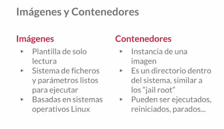

Inicio
Docker Engine, que es la aplicación cliente servidor de docker y se contituye de 3 componentes. El demonio de docker, que es el demonio que se ejecuta en segundo plano en en nuestra maquina fisica y es el quien esta a la escucha para poder ejecutar esos contenedores o maquinas virtuales dentro de nuestro ordenador. Red API. Nos permite comunicarnos con el demonio de Docker, es fundamental para hacer desarrollo de otros software y comunicar ese software con el demonio de docker para la gestion de esa maquina virtual. La interfaz de linea de comando (CLI)con la que nosotros utilizamos el servicio que es el comando docker. Lo que realmente el comando docjker hacer no es una interactuacion directa con el demonio de docker como tal, sino que utiliza la red api que hay en medio para comunicarse con el demonio de docker. Cuando ejecutamos cualquier comando docker lo que estamos realmente haciendo es una llamada al API que se comunica con el demonio de docker y realiza la accion que sea conveniente.
Otro elemento que tenemos que tener en consideracion es el Docker registry. Se creo con la intencion de almacenar un servicio que nos permita almacenar imagenes Esta forma de almacenamiento de imagenes es como un servidor que nosotros tenemos en otro sitio diferente no en nuetra maquina virtual y lo que hace basicamente es almacenar imagenes que ahora explicaremos lo que son, con el objetivo de poder tener un almacen de software concreto y tambien poder irlo evolucionando mediante un versionado. Los registros de docker pueden serpublicos o privados, es decir que existen registros publicos en internet o pudiendo montarlo en tu ambito local registros de tipo privados como tus imagenes, versionalas y tener una evoluicion de tu docker. Suele estar orientado a las empresas que desarrollan sus propios servicios, si usan la tecnologia de docker normalmente se suele tener un registro privado donde se sube todo y si esa empresa aporta a la comunidad, tendra una parte publica y en esa parte publica suben algunas imagenes.
El registro oficial de docker vamos a verlo ahora que es un docker hub, un docker hub es la direccion donde docker a montado un registro, que es el registro mas importante de todo internet y vamos a verlo porque es importante tener una cuenta a mano. La pagina es https://hub.docker.com Necesitariamos un ID de docker, el identificador de usuario, una direccion de email y una contraseña. Y validar la cuenta en tu correo a continuacion.
Una vez accedemos tendriamos en el dashboard, nuestro nombre de usuario, los repositiorios que nostros tenemos creados, el concepto de repositorio seria donde vamos a alojar una imagen, esos repositorios puyeden ser publicos o privados, la cuenta publica te permite un repositorio privado. Para la explicacion, creariamos un repositorio publico y le introduciriamos una imagen. Podriamos trabajar nustras imagenes en local y cuando tengamos la imagen realizada y lista para funcionar la vamos subiendo. A continuacion vamos a pasar a la explicacion del concepto de imagenes y contenedores. Es una plantilla de solo lectura y que se compone de un sistema de ficheros y unos parametros listos para poder ejecutarlos, esta basado en sistema operativo linux. Nosotros en docker hub tenemos multitud de imagenes / plantillas para poder ejecutar: imagenes de debian, imagenes de ubuntu, de todos los tipos de distribuciones de linux y ademas de eso tenemos otro tipo de imagenes que ya estan preparadas para poder ejecutar servicios, tenemos imagenes de mysql, de apache, de git, es decir, de todos los softwares mas importantes que se conocen hasta la fecha.
